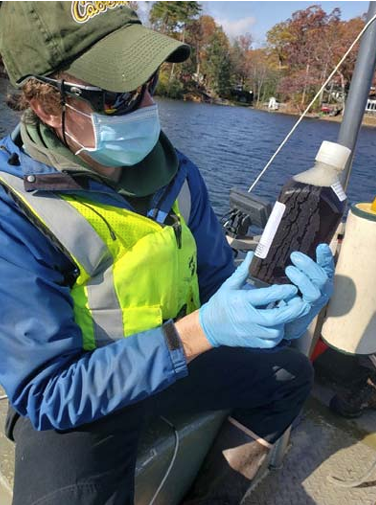
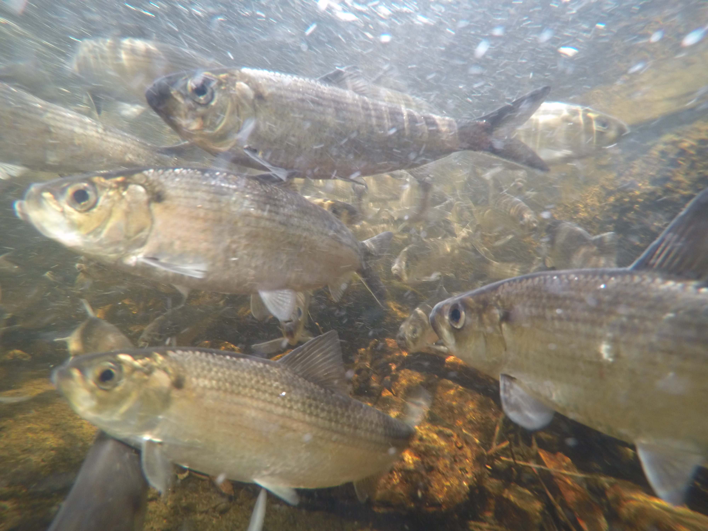

Past Projects
EPA Nine-Element Plans
I have worked to support a number of watershed nine-element plans during my tenure at UFI. My role has included the estimation of material (nutrient and sediment) loading coming from the land using empirical tools such as FLUX32 software and the R Package loadflex, the estimation of dreissenid mussel populations, and watershed modelling with GWLF-E (Generalized Watershed Loading Functions - Enhanced).
Owasco Lake (2019 - 2022)
Developed material loading estimates using FLUX32 software.
Watershed land use/land cover assessment using QGIS.
Estimated dreissenid mussel biomass, including both zebra and quagga mussels as a single profile with depth using linear regression models.
Skaneateles Lake (2021 - 2024)
Developed material loading estimates using FLUX32 software.
Watershed land use/land cover assessment using QGIS.
Estimated quagga mussel biomass as a series of depth profiles for each lake model segment using Bayesian heirarchical modelling.
Oneida Lake (complete - not released)
Developed material loading estimates using FLUX32 software.
Estimated dreissenid mussel biomass using sediment specific depth profiles within a linear modelling framework.
Sandy Creek (complete - not released)
Calibration and confirmation of GWLF-E watershed models for each of 13 HUC-12 watersheds under study.
Primary author of modeling report, including sensitivity analysis, model calibration, and management scenario runs reporting.
Otsego Lake (in-progress)
Data GAP analysis to identify critical data needs for completing the nine-element process.
Quality Assurance Project Plan (QAPP) development for water quality sampling and dreissenid mussel collection components.
Developed material loading estimates using the USGS loadflex R package.
Lake Management Plans
Plymouth Reservoir (SUNY Oneonta BFS Technical Report #32)
During my first year of the MS program, our cohort collaboratively developed an interim management plan for a small reservoir in central New York.
Highlights included the creation of a bathymetric map, fisheries survey, and water quality analysis, resulting in recommendations for management actions to protect recreational use of the waterbody.
Butterfield Lake (SUNY Oneonta BFS Occasional Paper #66)
My thesis included study of coliform bacteria, fisheries, macrophytes, zooplankton, dreissenid mussels, water quality, and nutrient loading.
The culmination was a list of recommended actions to protect water quality and best uses of Butterfield Lake.
Ballston Lake
- UFI and EcoLogic LLC collaborated to complete field sampling of this unique lake in Eastern NY. It is a meromictic lake, meaning that a portion of the water column never mixes to the surface.

- My roles included field sampling, GIS analysis of the watershed, nutrient loading analysis using available historical data and GWLF-E watershed modeling, and review of report text.
Polymictic lake in Northen NY with a unique bathymetry.
My roles included field sampling, GIS analysis of the watershed, compilation and analysis of historical water quality data, and writing and review of the final report.
Hatch Lake & Bradley Brook Reservoir
I was the primary investigator who reviewed three decades of historical data on two man-made reservoirs in central NY.
Using a combination of time series analysis, watershed modeling, GIS analysis, and site visits I was able to provide context to the lake association on recent changes to their waterbodies.
River Herring Growth
Utilizing data from the Massachusetts Division of Marine Fisheries Age and Growth lab, I evaluated growth patterns among six spawning runs in coastal Massachusetts. This work included the use of back-calculation of length at age using the RFishBC package, then fitting those data to von-Bertalanffy growth models. This was the project where I was formally introduced to the use of Bayesian heirarchical modeling with JAGS via the R2jags package.
